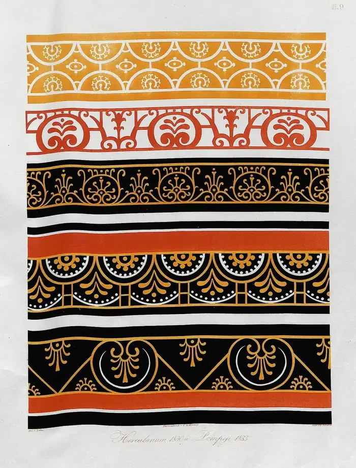
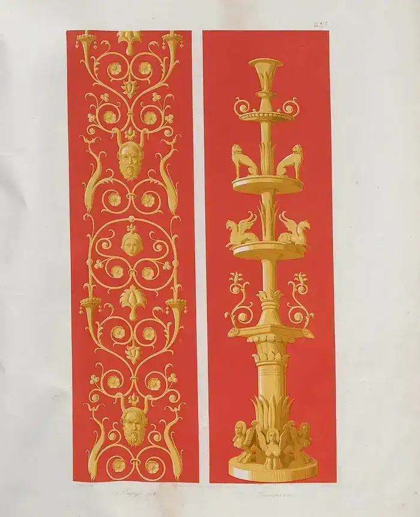
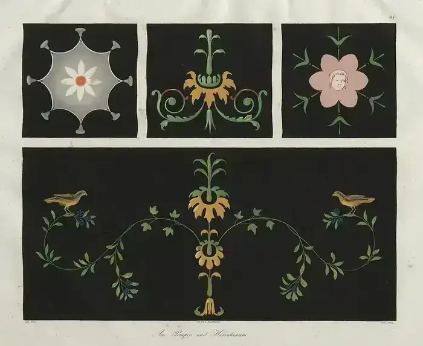

The eruption
In 79 AD Vesuvius buried Pompeii in ash and Herculaneum in pyroclastic flows. The towns were preserved with their streets, houses, shops, food and inscriptions, and the casts of the dead made from voids in the ash are among the most recognisable objects in archaeology.
Maps, diagrams and images






The finds
Excavation since the eighteenth century has produced frescoes, mosaics, household objects and a library of carbonised papyrus scrolls at Herculaneum, which modern imaging is beginning to read. The site is documented in excavation reports and in the modern conservation work.
The archive files it as documented because the towns and their contents are the evidence.
Documented: the eruption and the burial.
Documented: the streets and houses.
Documented: the casts of the dead.
Documented: the scroll library.
The label: documented.
Why it is in the archive
Because it is the best-preserved ordinary life in the ancient world, which is rarer than any treasure.
Open resources on this topic
- BookPompeii and Herculaneum — Seely, John · 1999 (Internet Archive, free to read)
- BookThe art and life of Pompeii and Herculaneum — Michael Grant · 1979 (Internet Archive, free to read)
- BookThe buried cities of Campania : or, Pompeii and Herculaneum, their history, their destruction, and their remai — Adams, W. H. Davenport (William Henry Davenport), 1828-1891 · 1870 (Internet Archive, free to read)
- PapersOpen-access articles: DOAJ · PubMed Central · Internet Archive Scholar
- BooksPublic-domain and borrowable copies: Open Library · Project Gutenberg · Google Books
Cite this page
Momin, S. (2026). Pompeii and Herculaneum. The Larger World Archive. https://drsamonline.github.io/LARGE_GLOBE/pompeii-herculaneum.htmlMomin, Sohil. “Pompeii and Herculaneum.” The Larger World Archive, 2026, https://drsamonline.github.io/LARGE_GLOBE/pompeii-herculaneum.html.Momin, Sohil. “Pompeii and Herculaneum.” The Larger World Archive, 2026. https://drsamonline.github.io/LARGE_GLOBE/pompeii-herculaneum.html.@misc{pompeii2026pompeii,
author = {Momin, Sohil},
title = {Pompeii and Herculaneum},
year = {2026},
howpublished = {The Larger World Archive},
url = {https://drsamonline.github.io/LARGE_GLOBE/pompeii-herculaneum.html},
note = {Last reviewed 20 November 2026}
}Last reviewed 20 November 2026 · Corrections policy · this page is not peer reviewed
Sources for this page
- Wikipedia, “Pompeii” — the townen.wikipedia.org
- Wikipedia, “Herculaneum” — the townen.wikipedia.org
- Wikipedia, “Mount Vesuvius” — the volcanoen.wikipedia.org
- Wikipedia, “Villa of the Papyri” — the libraryen.wikipedia.org